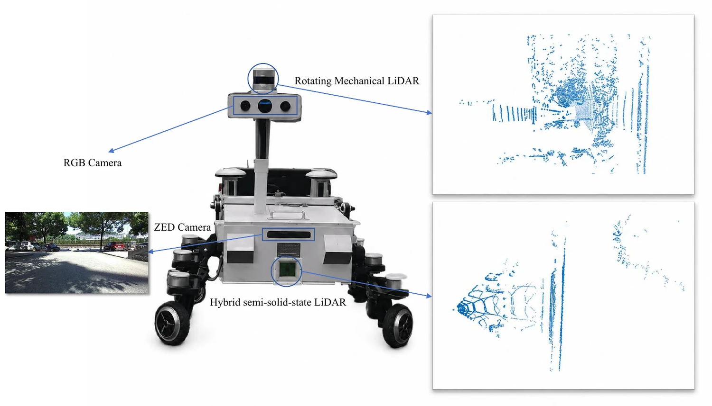
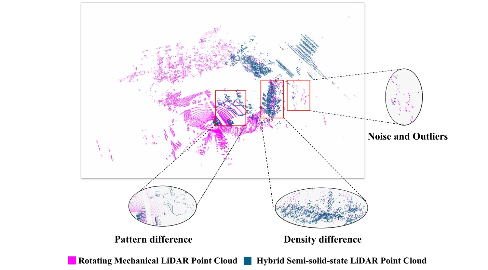

Cross3DReg: A Real-world Cross-source Point Cloud Registration Benchmark
Abstract
Point cloud registration aligns point clouds acquired from different viewpoints or sensing devices. Cross-source point cloud registration specifically aims to align point clouds captured by heterogeneous LiDAR sensors with substantially divergent sampling patterns and densities. Compared to the same-source point cloud registration, cross-source registration faces two core challenges: the lack of publicly available real-world datasets for training the deep registration models and the inherent difference in point clouds captured by multiple sensors. The diverse patterns induced by sensors pose great challenges in robust and accurate point cloud feature extraction and matching, which negatively influence the registration accuracy. To address these challenges, we introduce Cross3DReg, a large-scale real-world outdoor benchmark collected using two heterogeneous LiDAR sensors: a rotating mechanical LiDAR and a hybrid semi-solid-state LiDAR. Moreover, an overlap-based cross-source registration framework is designed to utilize unaligned images to predict the overlapping region between the source and target. By filtering out redundant points in non-overlapping regions, the framework effectively reduces interference from noise and irrelevant points. Then, a visual-geometric attention guided matching module is proposed to enhance the consistency of cross-source point cloud features by fusing image and geometric information to establish reliable correspondences and ultimately achieve accurate and robust registration.
Cross3DReg: A Real-world Outdoor Benchmark


Interactive 3D Registration Results
Loading point clouds...
RRE
RTE
Inlier ratio
Mask precision
BibTeX
@article{xu_cross3dreg,
title={Cross3DReg: A Real-world Cross-source Point Cloud Registration Benchmark},
author={Xu, Zongyi and Lang, Zhongpeng and Chen, Yilong and Zhao, Shanshan and Huang, Xiaoshui and Yang, Sean Bin and Zhang, Yan and Zhang, Qianni and Gao, Xinbo},
journal={International Journal of Computer Vision},
volume={134},
number={11},
pages={490},
year={2026},
publisher={Springer}
}